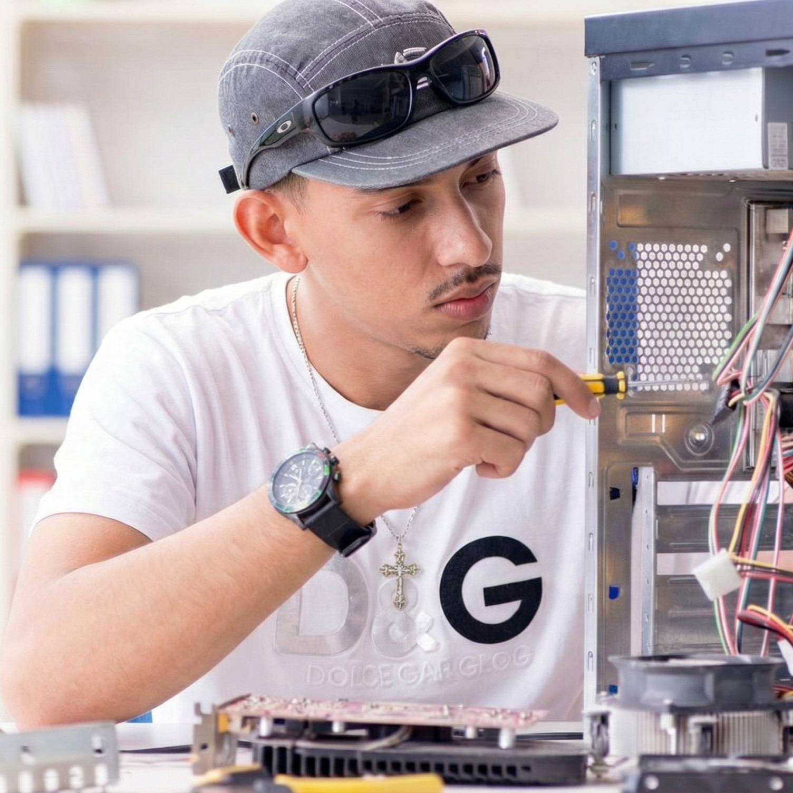

Sobre Nós
Nossa empresa é especializada em fornecer soluções completas de manutenção de hardware e software para empresas de todos os tamanhos. Com uma equipe de técnicos altamente qualificados, oferecemos serviços que vão desde a formatação de sistemas até a alocação de técnicos para suporte imediato.
Nosso compromisso é garantir que seus dispositivos e sistemas operem com máxima eficiência, minimizando o tempo de inatividade e otimizando o desempenho. Trabalhamos com as mais recentes tecnologias e práticas do setor para oferecer soluções personalizadas que atendam às necessidades específicas de cada cliente.
Além disso, valorizamos a transparência e a comunicação aberta com nossos clientes, garantindo que estejam sempre informados sobre o status dos serviços prestados. Nossa missão é ser um parceiro confiável para todas as suas necessidades de manutenção de hardware e software.
Nossa equipe
Emanuele Santos - Suporte Técnico
Responsável por garantir o bom funcionamento, segurança e eficiência dos ativos de tecnologia. Atua no suporte técnico de hardware e software, realizando instalação, configuração, manutenção e solução de problemas em computadores, periféricos, sistemas e aplicativos, incluindo remoção de vírus. Trabalha também na gestão de redes, cuidando da infraestrutura e conectividade. Presta suporte aos usuários, presencial ou remoto, oferecendo orientação básica quando necessário, além de realizar manutenções preventivas para evitar falhas e manter os equipamentos sempre operacionais.

Gabriel Santiago - Web Developer
Web Developer com foco na criação de sites e aplicações web modernas, responsivas e funcionais. Experiência com desenvolvimento front-end e back-end, integração de sistemas, otimização de desempenho e boas práticas de segurança. Sempre buscando soluções eficientes e uma ótima experiência para o usuário.
Lucimara Alves - Gerente de Manutenção de TI
Atuação estratégica na liderança de infraestrutura e suporte técnico, com foco na garantia da continuidade operacional e eficiência tecnológica. Responsável pela gestão completa do ciclo de vida de ativos e coordenação de equipas de alta performance.
Gabriela de Souza - Designer Gráfica
Traduzir a competência técnica da empresa em credibilidade visual, sendo responsável por construir uma imagem de confiança que atraia o cliente. Padronização da identidade visual em uniformes e documentos, simplifica informações complexas através de infográficos educativos e criar materiais de marketing, como "antes e depois" e anúncios, para converter orçamentos e valorizar o serviço prestado
Larissa Rodrigues - Analista de Dados
Analista de Dados focada em transformar dados brutos em insights estratégicos. Experiência com SQL, Python, ferramentas de BI, estatística e visualização de dados, criando análises e dashboards claros que apoiam decisões de negócio e geram impacto real.
© 2026 LG² Tech. Todos os direitos reservados.